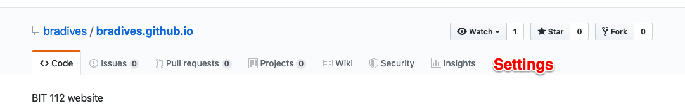
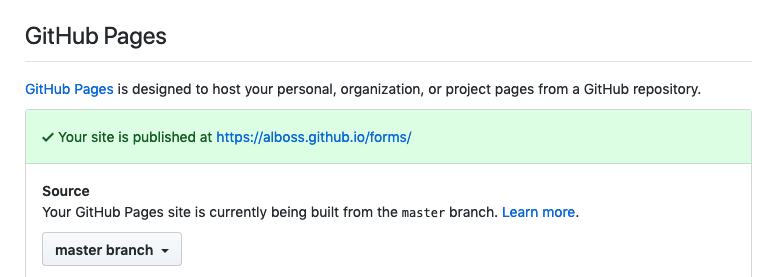

Publishing
We are using GitHub to store your code, and to publish your pages to GitHub Pages. That's about 1% of what GitHub can do.
In your GitHub repo, look for the settings option (which I put in red
here but it won't be that way for you).

Under Settings,> scroll down to GitHub pages. Does
it say something like this?

That green box should give you a good clue as to whether all is well.
Remember to set a theme (Jekyll Minimalist) in the settings for your repository, or it won’t publish to github.io.
Read Configuring a publishing source for GitHub pages if you run into problems.
Git is really about keeping track of changes you make to things, and allowing you to do things like:
-
experiment with something new and see if you like it
- if you like it, merge it into your master
- if you don't like it, no harm done, your master is unaltered
- roll back to a previous working version, if you mucked something up so badly that you need to abandon it
- let multiple people work on something at once then review and merge their changes into the master
I'm oversimplifying but I think you get the idea.
Elaboration on Git replacing FTP: they do different things but there's some overlap. Git is version control. I make a change, I check it into Git. I make another change, I check that in. We both make a change, we check them both in and Git says, wait a second, you both changed stuff; you have to tell me what you want me to keep.
In the old days, you would make your changes, put it into version control, then transfer the new version to a server somewhere. You had at least four things running at once:
- web browser
- code editor
- version control
- file transfer software
It was easy to forget a step: transfer something you hadn't saved, put something on the web that wasn't in version control, etc. So people started building hooks into the code editor so it could add to git, either automatically or manually. Then they built hooks into git so it could deploy to a web server, either manually or automatically. Now I can work in my editor, commit my changes to git within the editor, and the editor pushes the changes into git, and git pushes the changes to a web server, and I'm not having to drop everything and go through all those steps.
That's way outside the scope for this class, but that's why Git is increasing in popularity and FTP is decreasing.
You folks who are going into development (web, application, desktop, it doesn't matter) will likely be using a lot of Git. This class will barely get into the fancy stuff, just because we have enough to do already.
One useful concept is that of branches. That's the thing that lets you make a copy, do something to it, and then maybe abandon it or maybe roll it into your main body of work. I looked around for an easily digestible explanation and didn't find anything I loved. Here are a couple of okay descriptions:
https://thenewstack.io/dont-mess-with-the-master-working-with-branches-in-git-and-github/
https://uoftcoders.github.io/studyGroup/lessons/git/branches/lesson/
The way to delete a folder from GitHub.com is to delete every file inside it; that automatically deletes the folder.
You can also do this by downloading a GitHub desktop tool from https://desktop.github.com
However, you're going to have to learn a lot more about how Git works if you're going that route. https://help.github.com/en/desktop/getting-started-with-github-desktop will help with that.
Or, if you use the Visual Code editor, Visual Studio Code - Getting Started with Git(Hub)
Or, use the command line: https://product.hubspot.com/blog/git-and-github-tutorial-for-beginners